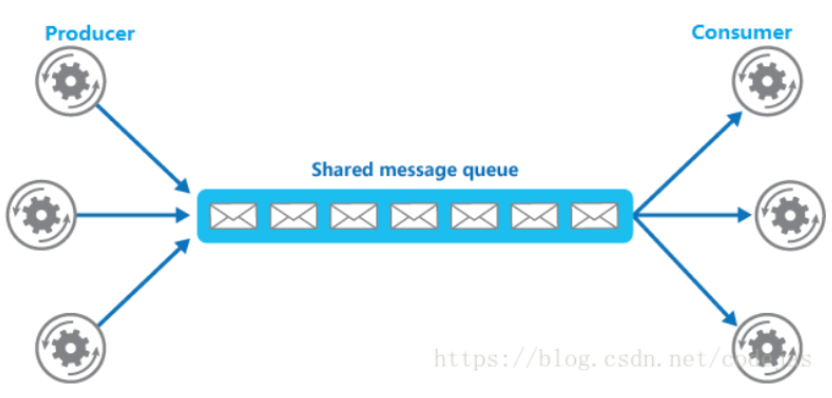

什么是消息队列
消息队列（MQ）可以简单理解为：把要传输的数据放在队列中，我们不用担心谁取到了它做了什么事情，提供了一个异步的通信协议。看张图理解一下

一般我们把放到队列里面的称为 Produce（生产者）负责产生和发送消息到 Broker。
Broker：消息处理中心。负责消息存储、确认、重试等，一般其中会包含多个 queue。
从队列里面取数据的称为 Consumer（消费者）负责从 Broker 中获取消息，并进行相应处理。
特点用处
异步：它允许接收者在消息发送很长时间后再取回消息同时也造成了一个缺点，就是接收者必须轮询消息队列，才能收到最近的消息。
解耦：减少了服务之间的耦合性，不同的服务可以通过消息队列进行通信，而不用关心彼此的实现细节，比如订单系统，订单最终支付成功之后可能需要给用户发送短信积分什么的，用户肯定不希望点击支付过好几分钟才看到结果。那么我们只需要通知短信系统“我们支付成功了”，不一定非要等待它处理完成。
广播：我们只需要关心消息是否送达了队列，至于谁希望订阅，是下游的事情，无疑极大地减少了开发和联调的工作量。
流量控制：当上下游系统处理能力存在差距的时候，利用消息队列做一个通用的”载体”。在下游有能力处理的时候，再进行分发与处理。就相当于我们秒杀的项目里面每秒可能会有成千上万个请求，但是数据库的处理能力是有限的，在这种并发量下后台服务很可能会挂掉。这时就可以通过消息队列将请求压入队列中，后台服务仍然按照之前的数据处理能力处理这些请求。虽然速度会慢一些但是能保证服务正常执行。
两种模式
生产者消费者模式：只有一个消费者将获得消息，生产者不需要在接收者消费该消息期间处于运行状态，接收者也同样不需要在消息发送时处于运行状态并且每一个成功处理的消息都由接收者签收。
生产者订阅模式：多个消费者可以获得消息，在发布者和订阅者之间存在时间依赖性。发布者需要建立一个订阅，以便客户能够购订阅。订阅者必须保持持续的活动状态以接收消息，除非订阅者建立了持久的订阅。在那种情况下，在订阅者未连接时发布的消息将在订阅者重新连接时重新发布。
实现方式
通过一个面向消息的中间件的 API，用于在两个应用程序之间，或分布式系统中发送消息，进行异步通信。
比方说 kafka，Apache ，RabbitMQ 等。
使用消息队列的问题
无论是我们使用消息队列来做解耦、异步还是削峰，消息队列肯定不能是单机的，因为是单机的消息队列，万一这台机器挂了，那我们整个系统几乎就是不可用了。所以要弄成集群分布式的。
数据丢失就是把数据写到消息队列上，系统 B 和 C 还没来得及取消息队列的数据，就挂掉了。如果没有做任何的措施，我们的数据就丢了。所以我们要把数据也需要存在别的地方。
Kafka
Kafka 是一种高吞吐量的分布式发布订阅消息系统，它可以处理消费者规模的网站中的所有动作流数据。 这种动作（网页浏览，搜 索和其他用户的行动）是在现代网络上的许多社会功能的一个关键因素。 这些数据通常是由于吞吐量的要求而通过处理日志和日志聚 合来解决。 对于像 Hadoop 的一样的日志数据和离线分析系统，但又要求实时处理的限制，这是一个可行的解决方案。Kafka 的目的是通过 Hadoop 的并行加载机制来统一线上和离线的消息处理，也是为了通过集群来提供实时的消费。
Kafka的一些概念
broker：一台 Kafka 服务器是一个 broker，一个集群由多个 broker 组成，一个 broker 可以容纳多个 topic。
topic：可以理解为一个 MQ 消息队列的名字，即为逻辑上的 queue。
partition：partition 是物理上的概念，每个 topic 包含一个或多个 partition，每个 partition 是个有序队列，创建topic 时可指定 partition 数量。每个 partition 对应于一个文件夹，该文件夹下存储该 partition 的数据和索引文件
segment：partition 物理上由多个 segment 组成
offset：每个 partition 都由一系列有序的、不可变的消息组成，这些 消息被连续的追加到 partition 中。partition中的每个消息都有一个连续 的序列号叫做 offset，用于 partition 唯一标识一条消息。
partition 删除策略
- 保留 X 天
- 超过一定大小
写入可靠性保障（分布式一致性问题）
acks=0：producers 不等 broker 的 acks。发送的消息可能丢失，但不会重复
acks=1：leader 不等待其他 follower 同步，leader 挂了，可能会丢失消息
acks=all：leader 等待所有 followers 同步完成才 acks。消息可靠不丢失，会重发
两种消费模式
- High-Level API ：使用 Zookeeper 来管理 offset，自动获取 last offset，consumer 负载均衡、broker 宕机都是自动化管理的。省心
- Low-Level API ：需要自己去管理 offset，还有 leader 的迁移、broker 宕机等情况。灵活
为什么 Kafka 吞吐量高
因为它是顺序写磁盘，媲美内存随机访问的性能。顺序写磁盘的性能是随机写入的性能的 6000 倍的提升，磁盘不再是瓶颈点。
kafka 如何保证消息有序
- kafka topic 只设置一个 partition 分区
- producer将消息发送到指定 partition 分区
kafka 默认保证同一个 partition 分区内的消息是有序的，则可以设置 topic 只使用一个分区，这样消息就是全局有序，缺点是只能被 consumer group 里的一个消费者消费，降低了性能，不适用高并发的情况，既然 kafka 默认保证同一个 partition 分区内的消息是有序的，则 producer 可以在发送消息时可以指定需要保证顺序的几条消息发送到同一个分区，这样消费者消费时，消息就是有序。
producer 发送消息时具体到 topic 的哪一个 partition 分区，提供了三种方式
- 指定分区
- 不指定分区，有指定 key 则根据 key 的 hash 值与分区数进行运算后确定发送到哪个 partition 分区
- 不指定分区，不指定 key，则轮询各分区发送
和传统的MQ对比有什么区别
- 高吞吐
- 集群模式的天然高可用
- 运维复杂度高
- 消息乱序
- ack 机制
消息丢失场景
acks=0，不和 Kafka 集群进行消息接收确认，则当网络异常、缓冲区满了等情况时，消息可能丢失；
acks=1，同步模式下，只有 Leader 确认接收成功后但挂掉了，副本没有同步，数据可能丢失；
如何防止数据丢失
生产者：同步发送消息，且消息配置为 -1 或 all，leader 分区和所有 follwer 都写到磁盘里。
异步模式下，为防止缓冲区满，可以在配置文件设置不限制阻塞超时时间，当缓冲区满时让生产者一直处于阻塞状态。
消费者：手动提交，即读取到消息后，确认消息消费完毕，才手动提交 offset。但是要避免逻辑处理时间过长，导致连接超时，会使消息重复消费。
消息重复解决方案
针对消息重复：将消息的唯一标识保存到外部介质中，每次消费时判断是否处理过即可。比如 redis 中消息可以使用唯一 id 标识
生产者（ack=all 代表至少成功发送一次)
消费者 （offset 手动提交，业务逻辑成功处理后，提交 offset）
落表（主键或者唯一索引的方式，避免重复数据）